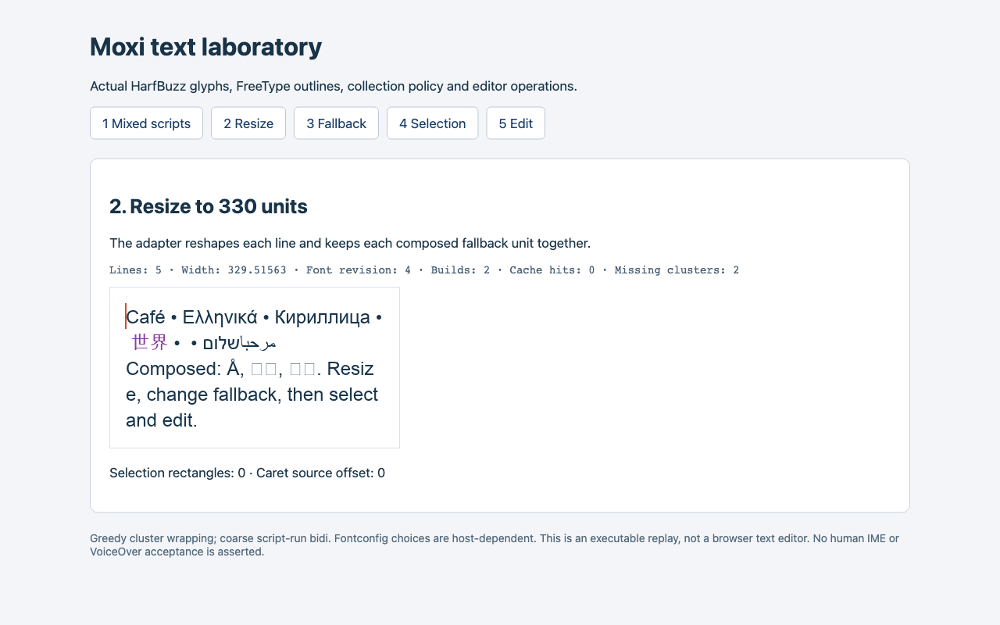
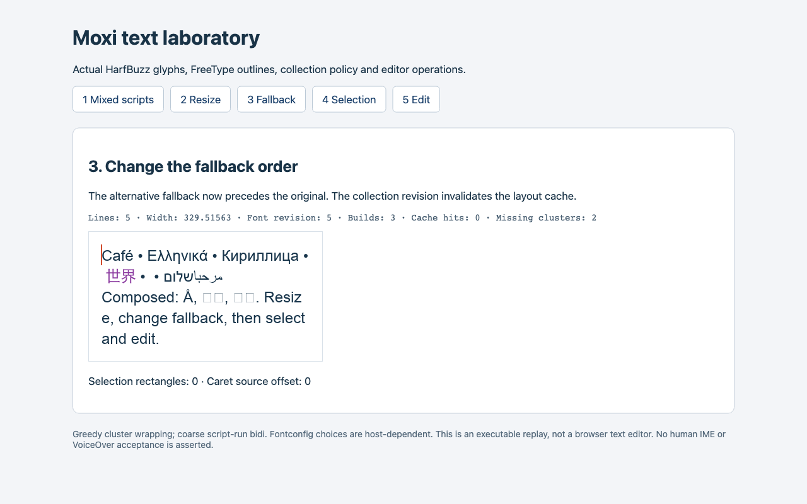
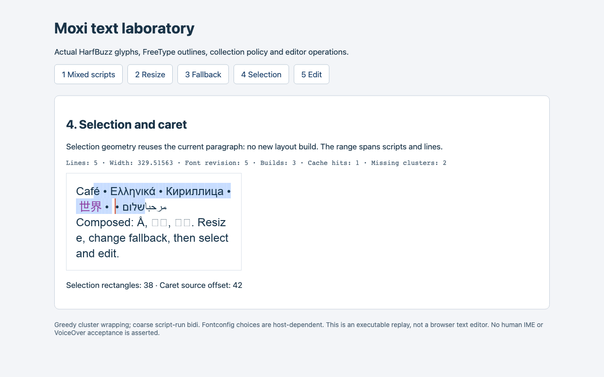
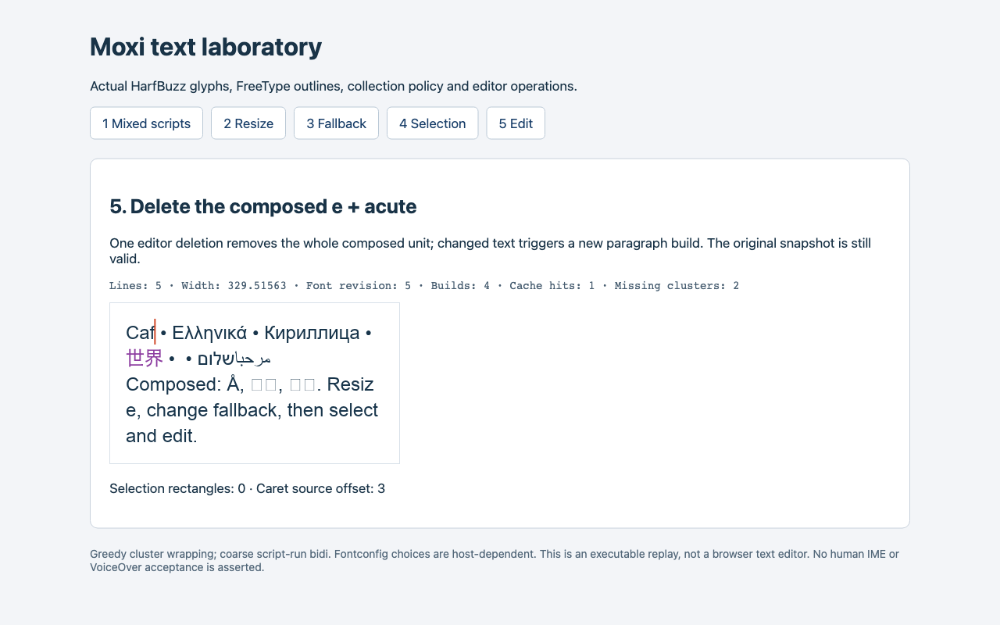
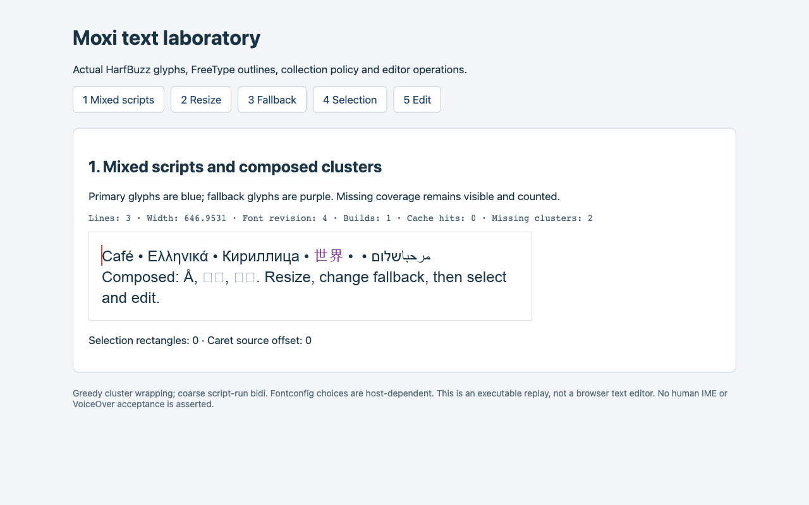

text-laboratory · 3a9c5b6 · macOS arm64 · HarfBuzz 14.5.0 / FreeType / Fontconfig; SVG outlines in Chromium · Arial, Arial Unicode MS, Hiragino Sans resolved by host Fontconfig; five executable states plus retained snapshot
Mixed scripts and explicit missing coverage Action: Open #mixed after running the executable. Expected: Three lines; revision 4; one build; two missing emoji clusters on this host.
initial · browser · 1280 × 800 pixels

Resize the paragraph constraint Action: Open #wrap, the executable state with a 330-unit constraint. Expected: Five lines; two builds; composed fallback units stay together.
interaction · browser · 1280 × 800 pixels

Change fallback order Action: Open #fallback, generated after fonts.move(2, 1). Expected: Revision 5 and three builds; CJK outlines change.
interaction · browser · 1280 × 800 pixels

Selection reuses the cached paragraph Action: Open #selection. Expected: 38 selection rectangles, source offset 42, three builds and one cache hit.
result · browser · 1280 × 800 pixels

Delete one composed unit Action: Open #edit, generated after TextInputState.delete_backward(). Expected: The whole e + acute unit disappears; cursor 3; four builds and one cache hit.
result · browser · 1280 × 800 pixels

Revisit the retained original snapshot Action: Return to #mixed after viewing the edited state. The executable also writes retained.svg after all edits. Expected: The original paragraph remains intact; retained.svg is byte-identical to mixed.svg. This is snapshot retention, not an editor undo interaction.
recovery · browser · 1280 × 800 pixels
Contact sheetReproduce
Run pixi run text-laboratory; serve dist/text-laboratory with python3 -m http.server; open index.html at 1280 x 800 CSS pixels, device scale 2; visit #mixed, #wrap, #fallback, #selection, #edit, #mixed. Browser navigation selects precomputed executable states; it does not execute text editing.
F01: real HarfBuzz glyphs and retained FreeType outlines, rendered as an executable replay with explicit missing coverage.
Screenshots show recorded states. They do not establish latency, scientific accuracy, physical IME, screen-reader behavior, or human usability.